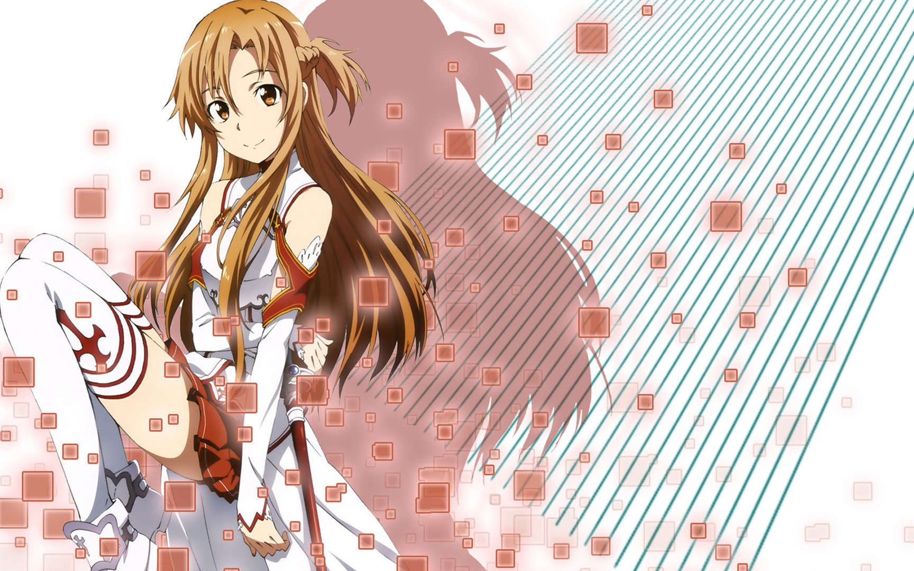

| 2022年11月6日因好奇借用哥哥结成浩一郎的NERvGear进入SAO的网络游戏新手，并用真名取游戏角色名字。但下午4点得知SAO的原本玩法，死亡游戏，卷入了死亡游戏后内心一直带着被现实世界抛开的恐惧与不安而未曾好眠，因为是游戏新手，所以身披深红色斗篷，不让他人看到自己的样子。
在第一层攻略会议中第一次遇到桐人并组队。和桐人成功攻略第一层，后和桐人解散队伍。
后加入了血盟骑士团，亚丝娜成为了顶级公会的攻略之鬼，血盟骑士团副团长，拥有了“闪光”的称号，一直想尽快突破100层回到现实世界，后因为和桐人不和而决斗，后开始注意起桐人，直到认识“活在”SAO里的桐谷和人后改变想法，也因此喜欢上桐谷和人并且在游戏里结婚。
亚丝娜在SAO中除了是原本就不多的女性玩家外，更是在反映真实长相的SAO系统下拥有排名前五名美貌的美女玩家，其美貌与能担任最强公会“血盟骑士团”副团长的实力，可以说战无不胜（唯独输给过桐人），让她在SAO中几乎是无人不晓的名人。 [3]为了避免沾上麻烦，血盟骑士团特别派了两名护卫贴身保护，但本人却不太喜欢。 [1] [6] [11]
武器是白色剑身的细剑“闪烁之光（Lambent Light/ランベントライト）”，能使出连桐人也看不清的高速高准度连击，而拥有“闪光”的称号。 [6]擅长的技能是单手细剑高等剑技“星屑飞溅”八连击、以及速度如同彗星般的“闪光穿刺”。 [1] [5-6]
在桐人加入“血盟骑士团”之后，因被克拉帝尔以麻痹毒暗算，在千钧一发之际救了桐人一命。 [12]但因误会桐人的一句话“我今晚想与你一起”，终于和桐人成为情侣，并在系统上“结婚”。 [12]之后与桐人向血盟骑士团团长申请了暂时退团， [12]在22层的玩家小屋开始了新婚生活， [13]与桐人共同有一个“女儿”——“结衣”。 [1] [13-14]
在桐人与希兹克利夫（茅场晶彦）的最终决战中，超越了系统限制，在麻痹状态下移动身体，舍身帮桐人挡下希兹克利夫一击，为保护桐人牺牲 [15]。因桐人亦超越了系统限制而与希兹克利夫同归于尽，茅场晶彦赐予不死之奖励 |